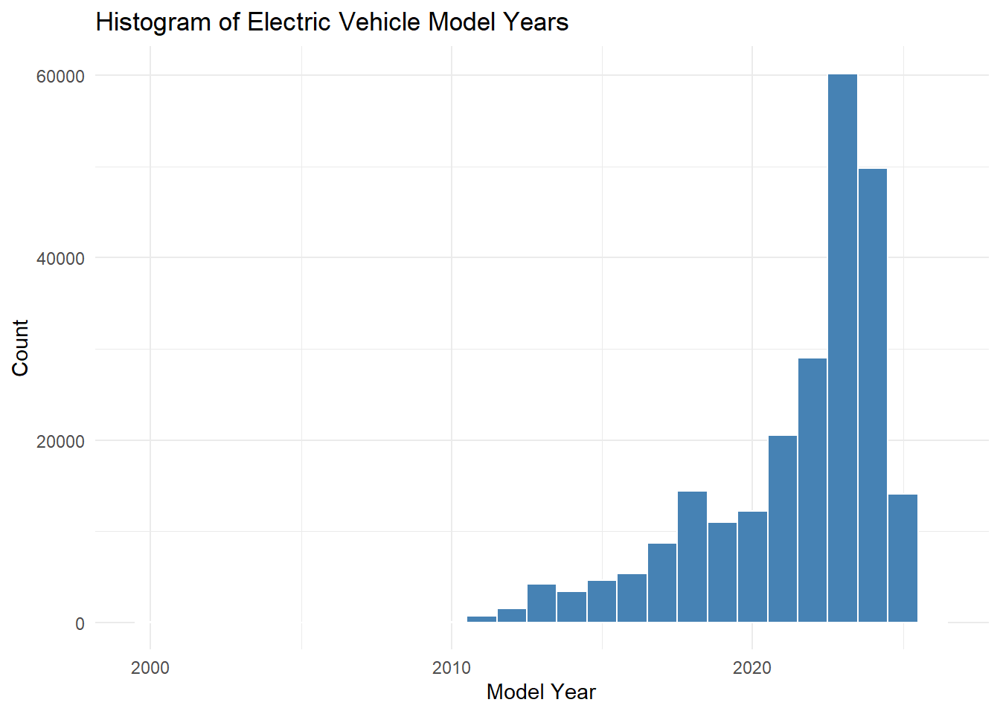
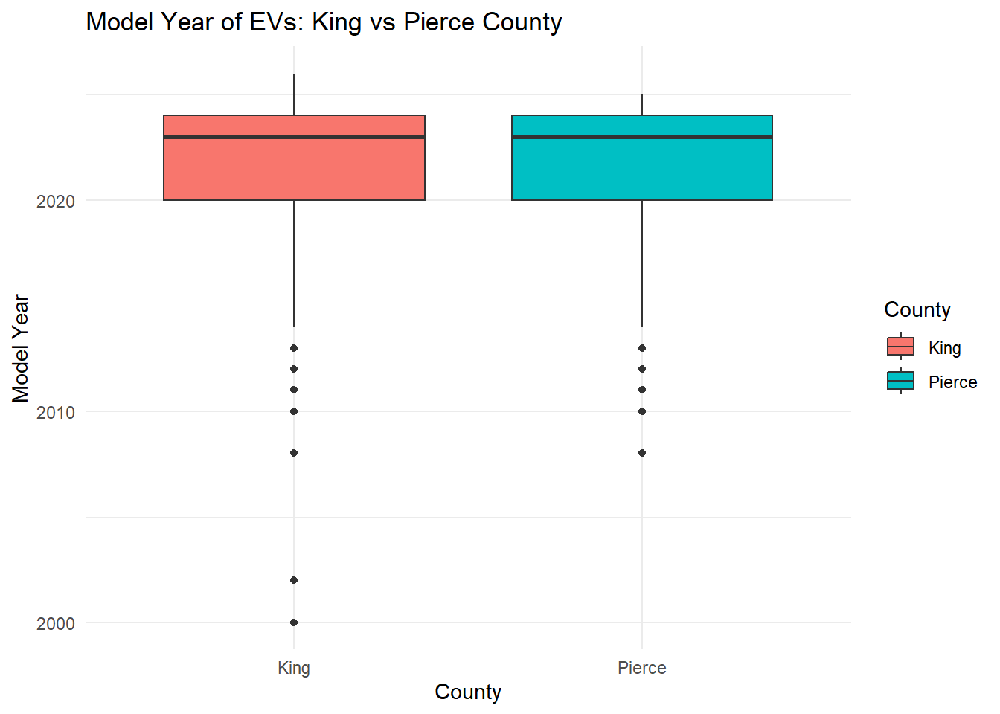

The dataset used for this analysis is titled Electric_Vehicle_Population_Data.csv, obtained from data.gov. It provides a snapshot of electric vehicle registrations in the state of Washington.
Each row in the dataset represents an individual electric vehicle. The main variables include:
VIN (1-10): The first 10 characters of the vehicle’s VIN
County: The county in which the vehicle is registered
City: The city of registration
State: All entries are in Washington (WA)
Postal Code: Zip code of the registrant
Model Year: The manufacturing year of the vehicle
Make: Manufacturer of the vehicle (e.g., Tesla, Nissan)
Model: The model name
Electric Vehicle Type: Type of EV – BEV or PHEV
CAFV Eligibility: Whether the vehicle is eligible under the Clean Alternative Fuel Vehicle initiative
Electric Range: Estimated electric-only driving range in miles
Base MSRP: Manufacturer’s suggested retail price
Legislative District: District of registration
Electric Utility: Electric utility provider for the registered address
Questions
How has the number of electric vehicles changed across different model years?
Is there a significant difference in electric vehicle model years between King County and Pierce County?
Rows: 239747 Columns: 17
── Column specification ────────────────────────────────────────────────────────
Delimiter: ","
chr (11): VIN (1-10), County, City, State, Make, Model, Electric Vehicle Typ...
dbl (6): Postal Code, Model Year, Electric Range, Base MSRP, Legislative Di...
ℹ Use `spec()` to retrieve the full column specification for this data.
ℹ Specify the column types or set `show_col_types = FALSE` to quiet this message.
ggplot(ev_data, aes(x =`Model Year`)) +geom_histogram(binwidth =1, fill ="steelblue", color ="white") +labs(title ="Histogram of Electric Vehicle Model Years",x ="Model Year",y ="Count") +theme_minimal()

Interpretation/Answer 1: The histogram shows how the number of electric vehicles has varied by model year. This can help us identify trends, such as increases or decreases in EV registrations over time.
Boxplot: Model Year by County (King vs Pierce)
To explore regional trends, we compare model years of EVs in King and Pierce counties.
ev_filtered <- ev_data %>%filter(County %in%c("King", "Pierce"))ggplot(ev_filtered, aes(x = County, y =`Model Year`, fill = County)) +geom_boxplot() +labs(title ="Model Year of EVs: King vs Pierce County",y ="Model Year") +theme_minimal()

#Interpretation/ Answer 2: The boxplot helps us visually compare the range and median model years between the two counties. The difference in the central tendency or spread of data suggests varying adoption rates or preferences between the counties.
#Interpretation: These summary statistics provide an overview of electric vehicle registrations in King and Pierce counties, showing how the model year data varies in each region.
t_test_result <-t.test(Model_Year ~ County, data = ev_filtered)t_test_result
Welch Two Sample t-test
data: Model_Year by County
t = 5.3227, df = 25647, p-value = 1.031e-07
alternative hypothesis: true difference in means between group King and group Pierce is not equal to 0
95 percent confidence interval:
0.07847053 0.16994914
sample estimates:
mean in group King mean in group Pierce
2021.596 2021.472
Interpretation: The t-test result shows the difference in the average model year between the two counties. If the p-value is less than 0.05, we reject the null hypothesis and conclude that there is a statistically significant difference in model years between the counties.
Since the p-value is less than 0.05, we conclude that there is a significant difference in the model years of electric vehicles between King and Pierce counties.
Conclusion In this analysis, I explored the distribution of electric vehicles across different model years and compared the model years of vehicles registered in King and Pierce counties. I found that there is a statistically significant difference in the average model year of electric vehicles between the two counties, with King County having a slightly higher average model year than Pierce County. This difference could reflect varying adoption rates or preferences for newer electric vehicle models in these counties.
The descriptive analysis provided insights into the trends in electric vehicle registrations, and the inferential statistics confirmed a significant difference in model years between the counties, supporting the hypothesis of regional variation in EV adoption. These findings could inform future policies or initiatives aimed at increasing electric vehicle adoption in different areas.